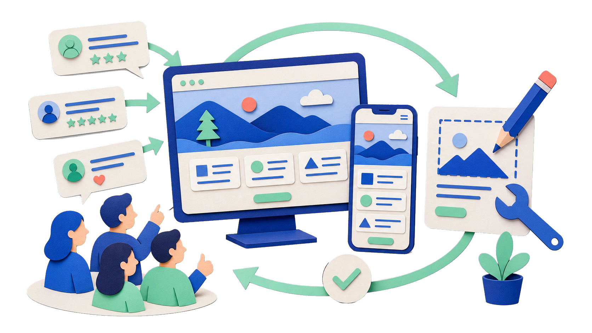

1주차
요청하고, 확인하고, 고치기
index.html을 열고 내 소개가 보이는지 확인한 뒤 한 곳을 바꿉니다.
이제는 한마디만 건네도
글·이미지·코드·화면이 만들어집니다.
중요한 것은 AI를 쓸 수 있느냐보다,
어떻게 일을 맡기느냐입니다.

3주 전체 여정
1주차
index.html을 열고 내 소개가 보이는지 확인한 뒤 한 곳을 바꿉니다.

2주차
누구의 문제를 풀지 정하고 꼭 필요한 기능만 첫 제품으로 만듭니다.

3주차
만든 결과를 웹에 공개하고 반응을 확인해 고친 뒤 다시 공개합니다.
이번 주에는 여정의 첫 단추인 요청 → 확인 → 수정을 직접 경험합니다.
오늘의 결과물
이름과 한 줄 소개, 관심사와 작은 활동을 한 화면에 담습니다. 오늘은 완성된 페이지를 직접 열고 한 곳을 바꿔 봅니다.

HELLO, I’M MINSEO
관찰한 정보를 모아 누구나 읽을 수 있는 화면으로 정리하는 일을 좋아합니다.
어디에 쓰는 도구인가?
질문하고 생각을 정리하며 초안을 만듭니다.
자료를 묶어 긴 작업과 산출물을 정리합니다.
현재 폴더 안의 실제 파일을 읽고 만들고 고칩니다.
이 강의는 Codex를 사용합니다. 계정·배포 상태에 따라 화면 구성은 다를 수 있습니다.

웹서비스 제작 과정

브라우저에 보이는 화면
프론트엔드는 사용자가 브라우저에서 직접 보고 누르는 화면을 만드는 영역입니다.

제목·문장·이미지처럼 내용의 구조를 세웁니다.
비유 집의 뼈대처럼 무엇이 어디에 놓일지 정합니다.

색·글자·여백·배치를 보기 좋게 꾸밉니다.
비유 옷과 인테리어처럼 화면의 인상을 만듭니다.

클릭 같은 행동에 화면이 반응하게 만듭니다.
비유 스위치처럼 행동을 화면의 변화로 연결합니다.
시작 전 확인
연결 상태를 확인합니다.
이용 계획과 로그인 상태를 확인합니다.
수업에서 쓸 앱을 준비합니다.
이름·소개·관심사 2~3개를 메모합니다.

참고하는 방식의 차이
지금 대화에 실제로 들어온 정보입니다. 요청·대화·열어 본 파일처럼, 현재 작업을 이해하는 데 바로 쓰입니다.
중요한 경로·유지 조건·완료 기준은 현재 요청에 다시 적습니다.다음에도 참고하도록 남긴 정보입니다. 모든 대화를 자동으로 기억하거나, 항상 정확하게 불러오는 기능은 아닙니다.
기억을 기대하기보다 이번 작업의 조건을 명확히 전달합니다.
수정 전에 정할 세 가지
이름·관심사·현재 구조처럼 이번 요청에서 건드리지 않을 것을 먼저 적습니다.
한 줄 소개나 배경색처럼 지금 확인할 한 가지만 고릅니다.
바뀐 부분 하나와 그대로 남은 부분 하나를 브라우저에서 나란히 봅니다.

한 줄 소개만 고치기
한 줄 소개만 [새 문장]으로 바꿔 달라고 말합니다.
이름·관심사·나머지 구성은 그대로 유지해 달라고 덧붙입니다.
브라우저에서 새 문장 하나와 이전 구성의 유지 여부를 함께 봅니다.

원하는 한 가지를 더 바꾼 뒤
통째로 복제하지 않고 분위기·색·글자·여백·배치 중
특징 하나만 고릅니다.
고른 특징 하나만 바꾸고, 내 내용과 구조는 그대로 둔다고 적습니다.
필수 내용과 읽기 쉬움이 맞으면 현재 결과를 남기고 무엇을 확인했는지 기록합니다.

저장 다음에 하는 일
index.html을 기준으로 새로고침합니다.브라우저가 이전 화면을 그대로 보여 주고 있지 않은지 확인합니다.
공유하기 전 사람이 직접 볼 세 가지
개인정보
연락처·환경변수·계정 정보가 들어가 있지 않은지 봅니다.
공개해도 되는 활동명과 일반적인 관심사만 남깁니다.
권리
다른 사이트의 로고나 이미지를 그대로 복사하지 않았는지 봅니다.
참고 자료에서는 분위기·색·여백 등 특징 하나만 고릅니다.
사실
소개에 적힌 이름·소속·링크가 실제와 맞는지 직접 읽습니다.
확인하지 못한 내용은 넣지 않고 사람이 최종 결정합니다.

한 파일에서 프로젝트로
index.html 하나를 요청합니다.prd.md로 정리합니다.요청 → 확인 → 수정의 기본 흐름은 다음 주에도 그대로 이어집니다.